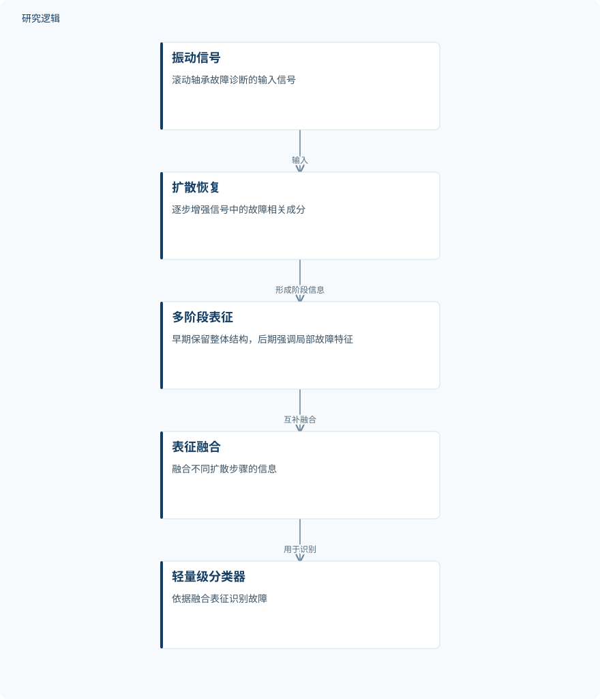

摘要解读
面向小样本滚动轴承故障诊断的多阶段扩散振动信号表征
Multi-stage diffusion-based vibration signal representation for few-shot rolling bearing fault diagnosis
解读更新 2026-10-18 08:54 · 依据公开摘要整理，未核验全文细节
在标注样本有限或含噪时，滚动轴承故障诊断如何仍能提取可靠特征？本文提出多阶段扩散式振动信号表征方法，尝试以逐步恢复信号和融合不同阶段信息应对小样本诊断难题。
文章目录
小样本与噪声带来的诊断难题
工业振动监测中的滚动轴承故障诊断，常面临标注数据有限的情况。摘要指出，训练样本不足或含噪时，传统深度学习方法的性能可能下降；因此，关键问题不只是识别故障，还包括如何在数据稀缺条件下形成更有区分力的信号表征。
从扩散恢复到多阶段表征融合
方法以扩散恢复过程逐步增强振动信号中的故障相关成分，进而提取特征。作者还设计多阶段表征策略，利用不同扩散步骤的信息：较早阶段保留信号整体结构，较晚阶段强调局部故障特征；最后融合这些表征，并交由轻量级分类器识别故障。
依据摘要整理的研究过程示意


仅呈现摘要明确描述的方法环节，不代表论文原图或未报告的实验配置。
下载 SVG图示关系说明
实线表示相邻阶段的信息流，虚线表示跨阶段联系或反馈。
振动信号 → 扩散恢复：输入；扩散恢复 → 多阶段表征：形成阶段信息；多阶段表征 → 表征融合：互补融合；表征融合 → 轻量级分类器：用于识别
摘要报告的小样本诊断表现
摘要称，作者在基准轴承数据集上进行了大量实验。与若干先进方法相比，所提方法取得了更好的诊断表现，尤其是在少样本设置下。摘要据此认为，基于扩散的信号表征有助于复杂工业环境中的稳健故障诊断；但没有提供具体数据集名称、指标或数值结果。
摘要尚未展开的验证细节
仅凭摘要无法判断样本规模、少样本设置的具体定义、噪声条件和数据集构成，也无法确认比较方法、评价指标及各方法是否采用一致的实验设置。摘要没有列出定量结果或验证范围的细节；这不代表论文正文未报告这些内容，需阅读全文核对。
阅读启发：不同阶段的信息各自贡献什么？
阅读启发：可进一步关注论文如何定义扩散步骤与多阶段表征，以及整体结构信息和局部故障特征如何融合。结合正文中的实验设置与结果，还可核对少样本条件下的比较方式，并观察含噪情形是否纳入验证；这些问题有助于判断摘要所述优势适用的范围。
以上为本站阅读启发与建议，不是论文已验证的结论。